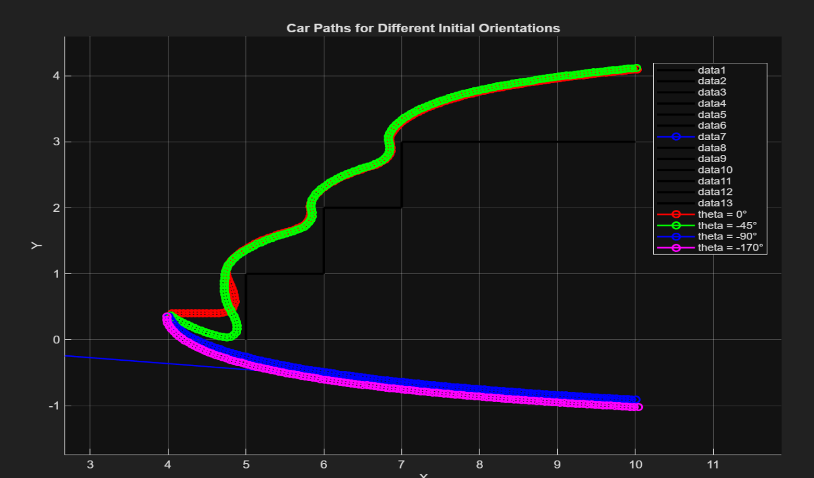
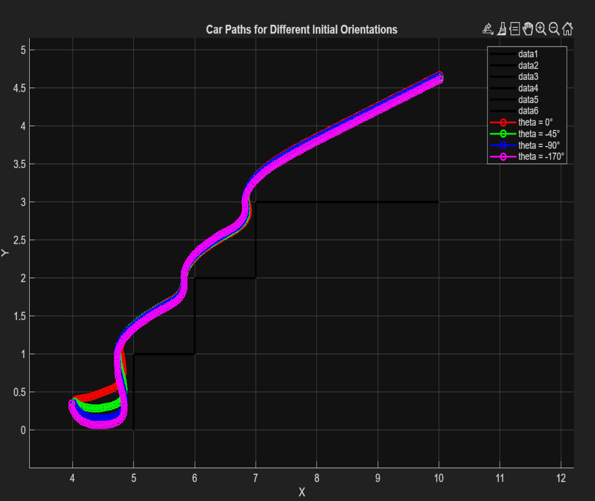

Mamdani Car Control FIS
Παράμετροι Συστήματος
Γενικές Παράμετροι FIS
Όνομα:
'car control'
Τύπος:
'mamdani'
Αριθμός Κανόνων:
27
Μέθοδος Defuzzification:
'centroid'
Ορισμός Εισόδων και Εξόδων
Είσοδος 1: dv (Κατακόρυφη Απόσταση)
Εύρος:
[0 1]
Συναρτήσεις Συμμετοχής:
'S', 'M', 'L' (Small, Medium, Large)
Είσοδος 2: dh (Οριζόντια Απόσταση)
Εύρος:
[0 1]
Συναρτήσεις Συμμετοχής:
'S', 'M', 'L' (Small, Medium, Large)
Είσοδος 3: theta (Γωνία Προσανατολισμού)
Εύρος:
[-180 180]
Συναρτήσεις Συμμετοχής:
'N', 'ZE', 'P' (Negative, Zero, Positive)
Έξοδος: dtheta (Αλλαγή Γωνίας)
Εύρος:
[-110 110]
Συναρτήσεις Συμμετοχής:
'N', 'ZE', 'P' (Negative, Zero, Positive)
Κανόνες Fuzzy Logic
Συνολικά 27 κανόνες οργανωμένοι ανά γωνία theta:
theta = N (Negative)
S,S,N → P (Κανόνας 1)
M,S,N → P (Κανόνας 2)
L,S,N → P (Κανόνας 3)
S,M,N → P (Κανόνας 4)
M,M,N → P (Κανόνας 5)
L,M,N → P (Κανόνας 6)
S,L,N → P (Κανόνας 7)
M,L,N → P (Κανόνας 8)
L,L,N → P (Κανόνας 9)
theta = ZE (Zero)
S,S,ZE → P (Κανόνας 10)
M,S,ZE → ZE (Κανόνας 11)
L,S,ZE → P (Κανόνας 12)
S,M,ZE → ZE (Κανόνας 13)
M,M,ZE → ZE (Κανόνας 14)
L,M,ZE → ZE (Κανόνας 15)
S,L,ZE → ZE (Κανόνας 16)
M,L,ZE → ZE (Κανόνας 17)
L,L,ZE → ZE (Κανόνας 18)
theta = P (Positive)
S,S,P → ZE (Κανόνας 19)
M,S,P → ZE (Κανόνας 20)
L,S,P → ZE (Κανόνας 21)
S,M,P → N (Κανόνας 22)
M,M,P → N (Κανόνας 23)
L,M,P → N (Κανόνας 24)
S,L,P → N (Κανόνας 25)
M,L,P → N (Κανόνας 26)
L,L,P → N (Κανόνας 27)
Επεξήγηση συμβολισμών:
Εισόδοι: dv,dh,theta → Έξοδος: dtheta
S=Small, M=Medium, L=Large, N=Negative, ZE=Zero, P=Positive
Εισόδοι: dv,dh,theta → Έξοδος: dtheta
S=Small, M=Medium, L=Large, N=Negative, ZE=Zero, P=Positive
Helper Functions
Συνάρτηση draw_obstacles()
Σχεδιάζει τα εμπόδια στο περιβάλλον:
function draw_obstacles()
% Draws the staircase obstacle boundary
segments = { ...
[5 0; 5 1]; % vertical at x=5
[5 1; 6 1]; % horizontal at y=1
[6 1; 6 2]; % vertical at x=6
[6 2; 7 2]; % horizontal at y=2
[7 2; 7 3]; % vertical at x=7
[7 3; 10 3] % horizontal at y=3
};
hold on; axis equal
for k = 1:numel(segments)
p = segments{k};
plot(p(:,1), p(:,2), 'k-', 'LineWidth', 2);
end
xlabel('X'); ylabel('Y');
title('Obstacle Boundary');
end
Συνάρτηση obstacle_axis_dist()
Υπολογίζει τις αποστάσεις από τα εμπόδια:
function [dh, dv] = obstacle_axis_dist(x,y)
% Range-limited distances from (x,y) to obstacle boundary
% dh ∈ [0,1] distance to nearest obstacle to the right (max 1m)
% dv ∈ [0,1] distance to nearest obstacle below (max 1m)
dh = 1;
dv = 1;
segments = { ...
[5 0; 5 1]; % vertical at x=5
[5 1; 6 1]; % horizontal at y=1
[6 1; 6 2]; % vertical at x=6
[6 2; 7 2]; % horizontal at y=2
[7 2; 7 3]; % vertical at x=7
[7 3; 10 3] % horizontal at y=3
};
for k = 1:numel(segments)
p1 = segments{k}(1,:);
p2 = segments{k}(2,:);
% vertical segment → check right
if p1(1)==p2(1)
xv = p1(1);
ylow = min(p1(2),p2(2));
yhigh = max(p1(2),p2(2));
if y>=ylow && y<=yhigh
distx = xv - x;
if distx >= 0 && distx <= 1
dh = min(dh,distx);
end
end
end
% horizontal segment → check down
if p1(2)==p2(2)
yh = p1(2);
xlow = min(p1(1),p2(1));
xhigh = max(p1(1),p2(1));
if x>=xlow && x<=xhigh
distv = y - yh; % positive if obstacle below
if distv >= 0 && distv <= 1
dv = min(dv,distv);
end
end
end
end
end
Προσομοίωση με Starting FIS
Κώδικας Προσομοίωσης
%% Car Control Simulation for Different Initial Orientations
% Simulation parameters
xd = 10; % target X
yd = 3.2; % target Y
u = 0.05; % forward speed
Xinit = 4;
Yinit = 0.4;
dt = 1; % time step
nSteps = 2000; % maximum number of steps
% Initial orientations
thetas = [0, -45, -90, -170];
colors = ['r', 'g', 'b', 'm']; % colors for each path
% Load FLC
carControl = readfis('car_control_starting.fis');
% Draw obstacles
draw_obstacles();
hold on;
% Loop over each initial orientation
for i = 1:length(thetas)
carX = Xinit;
carY = Yinit;
carTheta = thetas(i);
Xhist = zeros(1, nSteps);
Yhist = zeros(1, nSteps);
% Simulation loop
for k = 1:nSteps
% Sense environment
[dh, dv] = obstacle_axis_dist(carX, carY);
% Compute steering
dtheta = evalfis(carControl, [dv dh carTheta]);
carTheta = max(-180, min(180, carTheta + dtheta));
% Motion update
carX = carX + u * cosd(carTheta) * dt;
carY = carY + u * sind(carTheta) * dt;
% Store position
Xhist(k) = carX;
Yhist(k) = carY;
% Stop if target reached
if carX >= xd
Xhist = Xhist(1:k);
Yhist = Yhist(1:k);
break;
end
end
% Plot path
plot(Xhist, Yhist, [colors(i) '-o'], 'LineWidth', 1.5, ...
'DisplayName', ['theta = ' num2str(thetas(i)) '°']);
end
xlabel('X'); ylabel('Y');
axis equal;
grid on;
title('Car Paths for Different Initial Orientations');
legend show;

ΕΙΚΟΝΑ 10: Αποτελέσματα προσομοίωσης με starting FIS
Προσομοίωση με Δικό μου FIS
Φόρτωση του βελτιωμένου ελεγκτή
% Load Fuzzy Logic Controller
carControl = readfis('car_control.fis');

ΕΙΚΟΝΑ 11: Αποτελέσματα προσομοίωσης με βελτιωμένο FIS
Σύγκριση Αποτελεσμάτων
Η σύγκριση μεταξύ του αρχικού FIS και του βελτιωμένου δείχνει:
- Βελτιωμένη πλοήγηση γύρω από τα εμπόδια
- Πιο ομαλές τροχιές για διαφορετικούς αρχικούς προσανατολισμούς
- Καλύτερη αποφυγή συγκρούσεων
- Πιο αποτελεσματική σύγκλιση προς τον στόχο